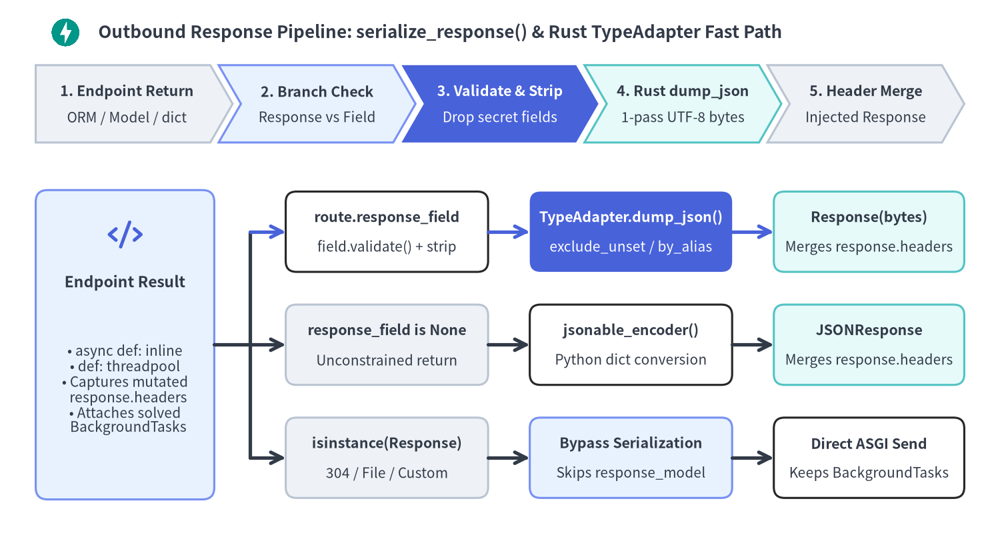

レスポンス直列化・ステータスコード・OpenAPI 3.1
FastAPI は serialize_response() によって出力契約を厳格に強制し、機密フィールドの除去から UTF-8 JSON バイト列への変換までを Pydantic v2 の単一 Rust パスで実行するとともに、入出力分割型の JSON Schema 2020-12 を備えた OpenAPI 3.1.0 仕様を遅延合成します。

Source Code
from drawlib.canvas import save, setup
from drawlib.icons import code, phosphor
from drawlib.lines import line, lines
from drawlib.shapes import rectangle
from drawlib.smartarts import ChevronProcess
from drawlib.styles import Styles
from drawlib.text import text
setup(width=168, height=92, dpi=150)
# Title Banner
code.fastapi((11, 86.5), width=5.2, style=Styles.Primary)
text(
(16.5, 86.5),
"Outbound Response Pipeline: serialize_response() & Rust TypeAdapter Fast Path",
style=Styles.DarkBold.patch(text_size=12.5, halign="left"),
)
# Top 5-Stage Macro Pipeline
macro = ChevronProcess(
style=Styles.Neutral,
text_style=Styles.DarkBold.patch(text_size=10.3),
description_style=Styles.Dark.patch(text_size=10.0),
corner_angle=60.0,
spacing=1.4,
flat_left_end=True,
)
macro.add("1. Endpoint Return", description="ORM / Model / dict")
macro.add("2. Branch Check", description="Response vs Field", style=Styles.PrimaryNeutral)
macro.add(
"3. Validate & Strip",
description="Drop secret fields",
style=Styles.PrimaryFlat,
text_style=Styles.WhiteBold.patch(text_size=10.3),
description_style=Styles.White.patch(text_size=10.0),
)
macro.add("4. Rust dump_json", description="1-pass UTF-8 bytes", style=Styles.SecondaryNeutral)
macro.add("5. Header Merge", description="Injected Response")
macro.draw((6, 68), width=156, height=13)
# Bottom Detailed 3-Track Execution Architecture
# Left Source Card (x=6..36, y=8..60)
rectangle((21, 34), width=30, height=52, style=Styles.PrimaryNeutral.patch(shape_r=2.0))
phosphor.code((21, 52.5), width=6.0, style=Styles.PrimaryBold)
text((21, 44.5), "Endpoint Result", style=Styles.DarkBold.patch(text_size=11.0))
text(
(21, 26.5),
"• async def: inline\n• def: threadpool\n• Captures mutated\n response.headers\n• Attaches solved\n BackgroundTasks",
style=Styles.Dark.patch(text_size=10.0),
)
# Track A (Top, y=53): Rust Fast-Path Serialization
# Track B (Middle, y=34): jsonable_encoder Fallback
# Track C (Bottom, y=15): Direct Response Subclass Bypass
tracks = [
(
53,
("route.response_field", "field.validate() + strip", Styles.White, False),
("TypeAdapter.dump_json()", "exclude_unset / by_alias", Styles.PrimaryFlat, True),
("Response(bytes)", "Merges response.headers", Styles.SecondaryNeutral, False),
),
(
34,
("response_field is None", "Unconstrained return", Styles.Neutral, False),
("jsonable_encoder()", "Python dict conversion", Styles.White, False),
("JSONResponse", "Merges response.headers", Styles.SecondaryNeutral, False),
),
(
15,
("isinstance(Response)", "304 / File / Custom", Styles.Neutral, False),
("Bypass Serialization", "Skips response_model", Styles.PrimaryNeutral, False),
("Direct ASGI Send", "Keeps BackgroundTasks", Styles.White, False),
),
]
# Orthogonal trunk fan-out from Left Source Card right edge (x=36) -> trunk (x=42) -> Col 1 left edge (x=48)
line((36, 34), (42, 34), style=Styles.DarkBold)
lines([(42, 15), (42, 53)], style=Styles.DarkBold)
for ty, s1, s2, s3 in tracks:
line((42, ty), (48, ty), arrow_head="->", style=Styles.PrimaryBold if ty == 53 else Styles.DarkBold)
# Col 1: cx=65, w=34 -> x=48..82
rectangle((65, ty), width=34, height=13.5, style=s1[2].patch(shape_r=1.8))
text((65, ty + 2.4), s1[0], style=Styles.DarkBold.patch(text_size=10.3))
text((65, ty - 2.6), s1[1], style=Styles.Dark.patch(text_size=10.0))
# Gap 82 -> 89 (7.0 units)
line((82, ty), (89, ty), arrow_head="->", style=Styles.PrimaryBold if ty == 53 else Styles.DarkBold)
# Col 2: cx=106, w=34 -> x=89..123
rectangle((106, ty), width=34, height=13.5, style=s2[2].patch(shape_r=1.8))
c2_h = Styles.WhiteBold if s2[3] else Styles.DarkBold
c2_b = Styles.White if s2[3] else Styles.Dark
text((106, ty + 2.4), s2[0], style=c2_h.patch(text_size=10.3))
text((106, ty - 2.6), s2[1], style=c2_b.patch(text_size=10.0))
# Gap 123 -> 130 (7.0 units)
line((123, ty), (130, ty), arrow_head="->", style=Styles.PrimaryBold if ty == 53 else Styles.DarkBold)
# Col 3: cx=146, w=32 -> x=130..162
rectangle((146, ty), width=32, height=13.5, style=s3[2].patch(shape_r=1.8))
text((146, ty + 2.4), s3[0], style=Styles.DarkBold.patch(text_size=10.3))
text((146, ty - 2.6), s3[1], style=Styles.Dark.patch(text_size=10.0))
save()
内部の永続化モデルと外部向け DTO を明確に分離することで、資格情報の誤漏洩を構造的に防ぎながら、Pydantic のコンパイル済み Rust コアによる高速なシリアライズを実現できます。
1. レスポンス直列化パイプライン（serialize_response）
ルート初期化時（fastapi/routing.py の _populate_api_route_state()）において、FastAPI は明確な優先順位規則に従って route.response_field を決定します。
| エンドポイントの宣言パターン | route.response_field |
get_request_handler() における実行時パス |
|---|---|---|
@app.get(..., response_model=PublicDTO) |
ModelField(mode="serialization") |
戻り値の型注釈より優先し、検証後に Rust TypeAdapter.dump_json() を実行 |
async def ep(...) -> PublicDTO:（response_model 省略） |
ModelField(mode="serialization") |
戻り値の型注釈を自動的に response_model として昇格 |
@app.get(..., response_model=None) または -> Response |
None |
ModelField 生成を抑止し、Response | dict などの Union 返却を許容 |
実行時に isinstance(val, Response) を直接返却 |
(バイパス) | serialize_response() をスキップし、Response インスタンスをそのまま送信 |
route.response_field が存在し、response_class が既定の JSONResponse（DefaultPlaceholder）である場合、get_request_handler() は高速パス use_dump_json = True を有効化します。
- 出力契約の検証と機密フィールド除去:
serialize_response()は返却値（ORM エンティティ・BaseModel・dict）に対しfrom_attributes=Trueでfield.validate(..., loc=("response",))を実行します（async defではイベントループ上、同期defではrun_in_threadpool経由）。公開モデルに定義されていないhashed_passwordやtotp_secretなどの属性は確実に除去され、契約違反があれば不正データを外部へ返す前にサーバー側のResponseValidationError（500）を送出します。 - Rust 1 パス JSON バイト列出力（
dump_json）: Python の中間dictとjson.dumps()を経由せず、field.serialize_json()がinclude・exclude・by_alias・exclude_unset・exclude_defaults・exclude_noneを適用したうえでTypeAdapter.dump_json()を呼び出し、生成された UTF-8bytesを直接Response(media_type="application/json")に格納します。 - ステータスコード別のボディ制御とヘッダ統合: 引数注入された
response: Response上で設定されたヘッダや Cookie（solved_result.response.headers.raw）は最終レスポンスへ自動追記され、ボディを持たないステータス（204・205・304・1xx）ではresponse.body = b""が強制されます。
機密フィールド除去と疎な PATCH 応答（exclude_unset）
内部 DB レコードに対して response_model=UserPublic を指定することで機密属性の漏洩を防ぎ、部分更新の PATCH では response_model_exclude_unset=True を併用することで明示的に送信されたフィールドのみを応答に含めることができます。
from typing import Any, Literal
from fastapi import FastAPI
from pydantic import BaseModel
app = FastAPI(title="Identity Profile API", version="1.0.0")
class UserRecordDB(BaseModel):
user_id: str
username: str
email: str
hashed_password: str
totp_secret: str
class UserPublic(BaseModel):
user_id: str
username: str
email: str
class ProfilePatch(BaseModel):
display_name: str = "Anonymous"
bio: str | None = None
theme: Literal["light", "dark"] = "light"
@app.get("/users/{user_id}", response_model=UserPublic)
async def get_user_profile(user_id: str) -> Any:
return UserRecordDB(
user_id=user_id,
username="alice",
email="alice@example.com",
hashed_password="$argon2id$v=19$m=65536,t=3,p=4$redacted",
totp_secret="JBSWY3DPEHPK3PXP",
)
@app.patch(
"/users/{user_id}/preferences",
response_model=ProfilePatch,
response_model_exclude_unset=True,
)
async def patch_preferences(user_id: str, patch: ProfilePatch) -> ProfilePatch:
_ = user_id
return patch
注入 Response によるヘッダ操作と直接 Response バイパス
response_model による検証と高速直列化を維持したままカスタムヘッダや堅牢な Cookie（__Host- 接頭辞・httponly=True・secure=True・samesite="lax"）を付与したい場合は、引数として response: Response を受け取ります。一方、304 Not Modified などのようにシリアライズ自体を意図的にバイパスする場合に限り、Response サブクラスを直接返却します（複数型を返す場合は response_model=None を明示します）。
from typing import Annotated
from fastapi import FastAPI, Header, Response, status
from fastapi.responses import JSONResponse
from pydantic import BaseModel, Field
app = FastAPI(title="Session & Cache API", version="1.0.0")
class SessionSummary(BaseModel):
session_id: str
active: bool
internal_signing_kid: str = Field(exclude=True, default="kid_v3")
@app.post("/sessions", response_model=SessionSummary)
async def issue_session(response: Response) -> dict[str, object]:
response.headers["Cache-Control"] = "no-store"
response.set_cookie(
key="__Host-session",
value="tok_opaque_random",
httponly=True,
secure=True,
samesite="lax",
path="/",
)
return {
"session_id": "sess_9001",
"active": True,
"unlisted_debug_token": "stripped-by-response-model",
}
@app.get("/health/raw", response_model=None)
async def raw_probe(etag_match: Annotated[str | None, Header()] = None) -> Response:
if etag_match == '"v1"':
return Response(status_code=status.HTTP_304_NOT_MODIFIED)
return JSONResponse(content={"status": "ok"}, headers={"ETag": '"v1"'})
2. OpenAPI 3.1.0 遅延合成と入出力分割スキーマ
プロセス起動時間を圧迫しないよう、FastAPI.openapi()（fastapi/applications.py）は初回の /openapi.json リクエストまたは app.openapi() 呼び出し時に OpenAPI 3.1.0 仕様を遅延生成し、router._get_routes_version()（_openapi_routes_version）と紐づけてキャッシュします。後から動的にルーターや Webhook が追加された場合はルート世代番号が更新され、キャッシュが自動的に再生成されます。
get_openapi()（fastapi/openapi/utils.py）の内部は以下の 3 段階で動作します。
- 全ルートからのフィールド収集（
get_fields_from_routes）: 公開対象の全APIRouteと Webhook を走査し、body_field（mode="validation"）、response_field、responses={...}由来のステータス別response_fields、stream_item_field（いずれもmode="serialization"）、コールバック、および平坦化されたDependantパラメータを収集します。 - 入出力分割 JSON Schema 2020-12 生成（
get_definitions）: 既定のseparate_input_output_schemas=Trueにより、Pydantic のGenerateJsonSchema(ref_template="#/components/schemas/{model}")に対して"validation"と"serialization"の双方のCoreSchemaが渡されます。Decimalフィールド（入力時はnumber | stringを許容し、出力時は厳密なstringに直列化）や@computed_field、serialization_aliasなど入出力で型表現が異なるモデルは、自動的に<Model>-Inputと<Model>-Outputへ分割して#/components/schemas/に出力されます。 - オペレーション合成とエラー統合（
get_openapi_path）: 共有依存関数間の重複パラメータを統合し、operationIdを確定させたうえで、responses={404: ..., 409: ...}をdeep_dict_update()でマージし、入力引数やボディを持つルートには422（HTTPValidationError）を自動付与します。

Source Code
from drawlib.canvas import save, setup
from drawlib.icons import code, phosphor
from drawlib.lines import line
from drawlib.shapes import rectangle
from drawlib.smartarts import CardList, ChevronProcess, Panel
from drawlib.styles import Styles
from drawlib.text import text
setup(width=168, height=92, dpi=150)
# Title Banner
code.openapi((11, 86.5), width=5.2, style=Styles.Primary)
text(
(16.5, 86.5),
"Lazy OpenAPI 3.1.0 Synthesis & Split Input/Output JSON Schema 2020-12",
style=Styles.DarkBold.patch(text_size=12.5, halign="left"),
)
# Top 4-Stage Synthesis Pipeline
flow = ChevronProcess(
style=Styles.Neutral,
text_style=Styles.DarkBold.patch(text_size=10.5),
description_style=Styles.Dark.patch(text_size=10.0),
corner_angle=60.0,
spacing=1.5,
flat_left_end=True,
)
flow.add("1. Version Cache", description="_openapi_routes_version")
flow.add("2. Field Harvest", description="get_fields_from_routes()", style=Styles.PrimaryNeutral)
flow.add(
"3. Split Schemas",
description="GenerateJsonSchema 2020-12",
style=Styles.PrimaryFlat,
text_style=Styles.WhiteBold.patch(text_size=10.5),
description_style=Styles.White.patch(text_size=10.0),
)
flow.add("4. Path Assembly", description="get_openapi_path() -> 3.1.0", style=Styles.SecondaryNeutral)
flow.draw((6, 68), width=156, height=13)
# Bottom-Left Panel: Split Input/Output Schema Generation
left_p = Panel(
"Split Schemas (separate_input_output_schemas)",
style=Styles.Neutral,
header_style=Styles.PrimaryNeutral,
text_style=Styles.DarkBold.patch(text_size=10.8),
icon=phosphor.arrows_split,
icon_style=Styles.PrimaryBold,
header_height=8.5,
)
left_p.draw((6, 6), width=78, height=57)
rectangle((45, 46.5), width=68, height=10.5, style=Styles.White.patch(shape_r=1.8))
text((45, 48.7), "Pydantic v2 GenerateJsonSchema", style=Styles.DarkBold.patch(text_size=10.5))
text((45, 44.2), "Evaluates mode='validation' vs mode='serialization'", style=Styles.Dark.patch(text_size=10.0))
# Arrows down from y=41.2 to y=33.0 (8.2 units gap)
line((26.5, 41.2), (26.5, 33.0), arrow_head="->", style=Styles.DarkBold)
line((63.5, 41.2), (63.5, 33.0), arrow_head="->", style=Styles.PrimaryBold)
rectangle((26.5, 21.0), width=32, height=23.5, style=Styles.PrimaryNeutral.patch(shape_r=1.8))
text((26.5, 28.5), "SkuSpec-Input", style=Styles.DarkBold.patch(text_size=10.8))
text(
(26.5, 17.5),
"• requestBody $ref\n• Decimal: num | str\n• Validation aliases",
style=Styles.Dark.patch(text_size=10.0),
)
rectangle((63.5, 21.0), width=32, height=23.5, style=Styles.PrimaryFlat.patch(shape_r=1.8))
text((63.5, 28.5), "SkuSpec-Output", style=Styles.WhiteBold.patch(text_size=10.8))
text(
(63.5, 17.5),
"• responses[201] $ref\n• Decimal: strict str\n• @computed_field",
style=Styles.White.patch(text_size=10.0),
)
# Bottom-Right Panel: Operation & Custom Status Code Assembly
right_p = Panel(
"Operation Assembly (get_openapi_path)",
style=Styles.Neutral,
header_style=Styles.SecondaryNeutral,
text_style=Styles.DarkBold.patch(text_size=10.8),
icon=phosphor.file_code,
icon_style=Styles.DarkBold,
header_height=8.5,
)
right_p.draw((89, 6), width=73, height=57)
r_xy, r_w, r_h = right_p.get_content_box((89, 6), width=73, height=57, padding=(3.0, 2.8))
ops = CardList(
style=Styles.White,
text_style=Styles.DarkBold.patch(text_size=10.5),
description_style=Styles.Dark.patch(text_size=10.0),
badge_shape="rounded_rect",
badge_style=Styles.PrimaryNeutral,
badge_text_style=Styles.PrimaryBold.patch(text_size=10.0),
direction="vertical",
spacing=2.4,
)
ops.add(
"Versioned Schema Cache",
"O(1) hit; invalidates on\n_get_routes_version() bump",
badge_text="O(1)",
)
ops.add(
"Custom Status Merging",
"responses={404, 409} merged\nvia deep_dict_update()",
badge_text="4xx",
style=Styles.SecondaryNeutral,
)
ops.add(
"422 & Interactive Docs",
"Adds HTTPValidationError\n-> /openapi.json & /docs",
badge_text="3.1",
)
ops.draw(r_xy, width=r_w, height=r_h)
save()
エラー契約の宣言と OpenAPI 3.1 分割スキーマの検証
responses={404: {"model": ErrorDetail}, 409: {"model": ErrorDetail}} を宣言することで正常系の status_code=201 と並べて型付きエラースキーマを公開でき、さらに SkuSpec の Decimal フィールドによって app.openapi() 内に SkuSpec-Input と SkuSpec-Output が生成されることをプログラムから直接検証できます。
from decimal import Decimal
from fastapi import FastAPI, status
from fastapi.responses import JSONResponse
from pydantic import BaseModel
app = FastAPI(title="Warehouse SKU API", version="2.0.0")
class ErrorDetail(BaseModel):
code: str
message: str
class SkuSpec(BaseModel):
sku: str
unit_price: Decimal = Decimal("19.99")
store: dict[str, SkuSpec] = {"SKU-100": SkuSpec(sku="SKU-100")}
@app.post(
"/skus",
response_model=SkuSpec,
status_code=status.HTTP_201_CREATED,
responses={
404: {"model": ErrorDetail, "description": "Parent warehouse not found"},
409: {"model": ErrorDetail, "description": "SKU already exists"},
},
)
async def register_sku(spec: SkuSpec) -> SkuSpec | JSONResponse:
if spec.sku in store:
return JSONResponse(
status_code=status.HTTP_409_CONFLICT,
content={"code": "SKU_CONFLICT", "message": f"{spec.sku} already exists"},
)
store[spec.sku] = spec
return spec
openapi_doc = app.openapi()
assert openapi_doc["openapi"] == "3.1.0"
assert "SkuSpec-Input" in openapi_doc["components"]["schemas"]
assert "SkuSpec-Output" in openapi_doc["components"]["schemas"]
assert set(openapi_doc["paths"]["/skus"]["post"]["responses"]) >= {"201", "404", "409", "422"}
入力パラメータやマルチパートボディの分類規則については Path・Query・Header・Cookie・Body を参照してください。続いて、階層的な Depends() グラフの解決は Dependant DAG・キャッシュ・yield スコープ、itemSchema を用いたストリーミング OpenAPI 契約は ネイティブ SSE・JSONL・WebSocket で詳しく解説します。